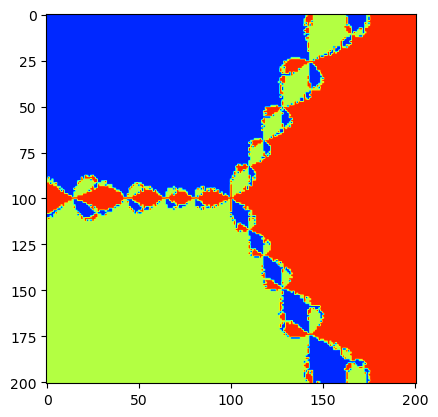
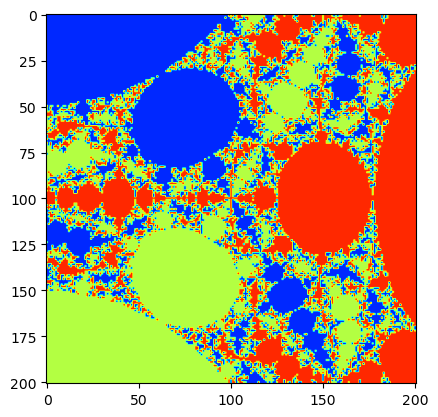
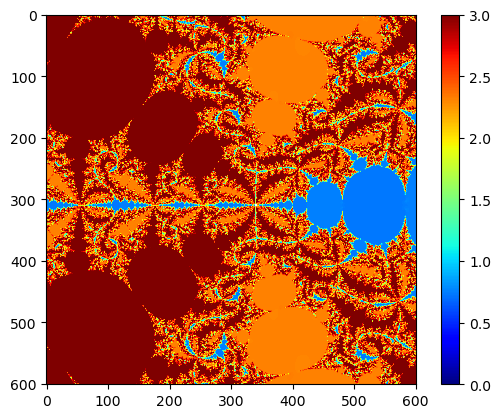
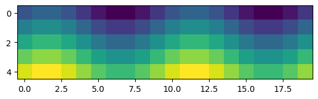

複素Newton法#
\(x^3 - 1 = 0\) に対する複素Newton法#
#
# f(x) = x^3 - 1 に対する複素Newton法
#
using PyPlot
function newton_fractal(center = Complex(0.0), width = 2.0, α=1.0; N=Int(100))
iter = 0
maxiter =100
tol = 1e-4
J = zeros(2N + 1, 2N + 1);
ω = Complex(-1/2, sqrt(3)/2)
root = [1, ω, conj(ω)] # conj()は複素共役
root_color = [2.6, 0.5, 1.7] # Newton法の収束先によって描画色を変える
for i in -N:N, j in -N:N
z = center + (i+j*im)/N*width;
iter = 0
color = 0
# Newton法の反復
for l in 1:maxiter
z = z - α*(z^3-1)/(3z^2)
# 停止条件
# 厳密解がわかっているので，どれかに十分近づいたら止める．
if minimum([abs(z - a) for a in root]) < tol
iter = l; break
end
end
if (iter == maxiter)
color = 3 # 最大反復回数に達した場合
else
# 停止時にzが一番近い解の色に設定
min_dist, ind = findmin([abs(z - r) for r in root])
color = root_color[ind]
end
J[N + 1 - j,N + 1 + i] = color
end
return J
end
J = newton_fractal(Complex(0), 4.00)
# 画像表示
img = imshow(J, cmap="jet")
clim(0,3)
#colorbar(img) # カラーバーの表示

# M=10
# J = zeros(M,41,41)
# figure(figsize=(20, 50))
# for i in 1:M
# α = 1.2 + 0.1i
# J[i,:,:] = newton_fractal(Complex(0), 4.00, α, N=20)
# subplot(M,5,i)
# imshow(J[i,:,:], cmap="jet")
# clim(0,3)
# axis("off")
# end
J = newton_fractal(Complex(0), 4.00, 2.1, N=100)
img = imshow(J, cmap="jet")
clim(0,3)

\(x^4 + x^3 - 1 = 0\) に対する複素Newton法#
#
# f(x) = x^4 + x^3 - 1 に対する複素Newton法
#
using PyPlot
function newton_fractal2(center = Complex(0.0), width = 2.0)
N = 300
iter = 0
maxiter =200
tol = 1e-4
J = zeros(2N + 1, 2N + 1);
ω = Complex(-1/2, sqrt(3)/2)
root = [1, ω, conj(ω)] # conj()は複素共役
root_color = [2.6, 0.5, 1.7] # Newton法の収束先によって描画色を変える
for i in -N:N, j in -N:N
z = center + (i+j*im)/N*width;
iter = 0
color = 0
# Newton法の反復
for l in 1:maxiter
z2 = z - 2.00*(z^5+z^3-1)/(5z^4+3z^2) #(z^3-1)/(3z^2)
# 停止条件
# 厳密解がわかっているので，どれかに十分近づいたら止める．
if abs(z2-z) < tol
iter = l
break
end
z = z2
end
if (iter == maxiter)
color = 10 # 最大反復回数に達した場合
else
color = abs(angle(z)) + sin(abs(z))
end
J[N + 1 - j,N + 1 + i] = color
end
return J
end
J = newton_fractal2(Complex(-0.4+0.1im), 3.00)
# 画像表示
img = imshow(J, cmap="jet")
clim(0,3)
colorbar(img) # カラーバーの表示

PyObject <matplotlib.colorbar.Colorbar object at 0x168daeaa0>
imshow の表示テスト#
M = [i + sin(pi/5*j) for i in 1:5, j in 1:20]
imshow(M)

PyObject <matplotlib.image.AxesImage object at 0x168e61300>